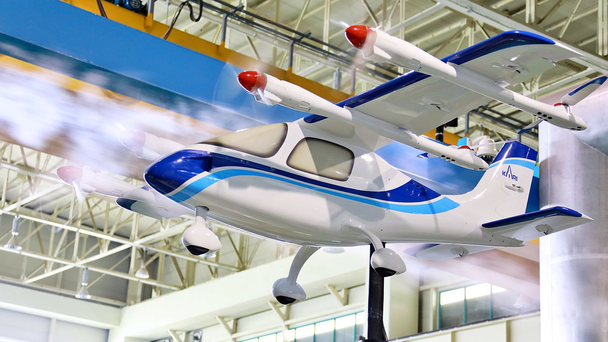

연구 과제 eVTOL 비행안정성, 운용성 실증시험평가 및 충돌회피처리 기술 개발기간2022발주처·지원기관한국항공우주연구원(KARI)과제번호·식별자1415186356, 2800000281OPPAV 축소 모형 풍동시험 — 한국항공우주연구원 (공공누리 제1유형)주요 내용·성과상위 과제 목표: 3차원 비행안정성·운용성 평가용 시험 시스템 구축, DAA 충돌회피처리 기술 개발, ISO 표준 연계관련 논문·발표"군집 비행 드론의 충돌 방지를 위한 UWB 레이다의 속도 감응형 CFAR 최적화" (2021)출처ntis.go.kr / ThSearchProjectList.dontis.go.kr / ThSearchProjectList.dodbpia.co.kr / journal/articleDetailscienceon.kisti.re.kr / srch/selectPORSrchReport.do구 연구실 홈페이지 / 연구실-소개 ← 연구 과제 목록으로